|
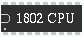 |
Download the Elf Emulator here
The libRcs library is required for this to run
Download the Elf Emulator disk tools. The disk tools allow you to easiliy manipulate Elf/OS disks
Windows executables can be downloaded here (this is version 2.6)
notes on windows version:
Most of the graphics issues have been resolved. Many thanks to Richard Peters
for his work on solving these! The window refresh problem remains however.
Debug now works correctly with F1
Also note that command line arguments can still be given to this executable. To use these, create a shortcut and then edit the "Target" field to include the paramters you would like.
I have had reports from several people using the windows version that closing the windows using the X button causes strange results. When exiting the elf emulator be sure to use the power switch on the emulator, or F9, instead of closing the program with the X button.
| Date | Version | Notes |
|---|---|---|
| 11/02/2020 | 2.7 | Added support for Pico/Elf V2 hardware |
| 4/03/2007 | 2.6 | Fixed yet more problems in the CDP1869/70 emulation Added support for the Cidelsa arcade machines (no roms supplied) |
| 4/20/2006 | 2.5 | Fixed some problems in the CDP1869/70 emulation Cleaned up the sources to make them easier to compile on Windows |
| 3/22/2006 | 2.4b | added CDP1869/70 mode added comx mode (requires comx-35 rom image) Unix version can now use physical disk devices Added user-settable disk geometry |
| 11/29/2004 | 2.3 | Added rudimentary 9918A support. Text, Graphics I, and Graphics II modes are working. Multi-color mode and sprites are not yet implemented. Emulation is a bit slow when changing 9918 registers, but after that it runs well. |
| 6/29/2004 | 2.2 | mostly minor changes |
| 6/07/2004 | 2.1 | Added ability to read Intel Hex formatted files |
| 5/13/2004 | 2.0 | Added reverse sense capability to serial port Netronics Pilot is now running |
| 5/10/2004 | 1.9 | Many of the windows issues have been resolved (thanks Richard!!) Studio II mode has been added. can read stem .st2 rom files Added F9 as an emulator exit key. Added clock limiting Added dialog to get run statistics (F2 key opens/closes this) |
| 4/23/2004 | 1.8 | Revamped the debugger. Now has graphical interface |
| 3/30/2004 | 1.7 | Rewrote pixie driver so that it acts more like a real one. Made some improvements to the rom reader Super Basic, Super Basic 5, and OakRidge Tiny Basic have all been tested and are working |
| 3/29/2004 | 1.6 | Added support for IDE interface, simulates 2 30mb drives. Added rudimentary support for 6847 video controller |
| 3/25/2004 | 1.5 | Changed device architecture to make it easier to add new devices or to change ports at runtime. Vastly improved performance for Pixie graphics. Improved the debugging mode. Pixie graphics mode is no longer enabled with -g, it uses -1861 instead. This was so i could accomodate other graphics systems in the future. |
| 2/17/2004 | 1.4 | Added support for the 1mb memory mapper and port extender |
| 1/28/2004 | 1.3 | Added support for a 1793 disk controller with 4 drives. All type I and single sector type II commands are working. |
| 1/26/2004 | 1.2 | Fixed some subtract bugs I inadvertantly put in while fixing the last subtract bugs :) Tiny Basic is now running |
| 1/23/2004 | 1.1 | Fixed some subtract bugs in the cpu core, added a 1805 mode |
| 1/21/2004 | 1.0 | Initial public release. Currently can run IDIOT/4 Monitor |
Screen Shots:
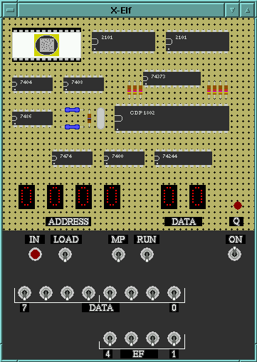 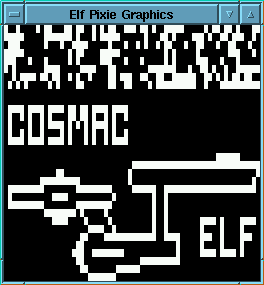
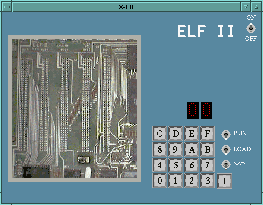
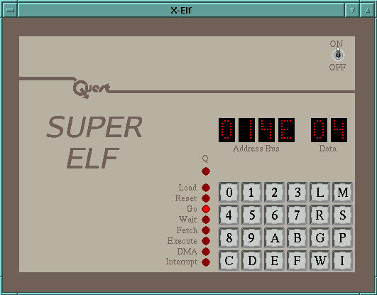
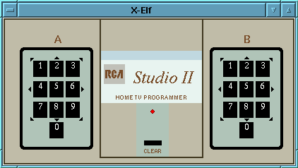
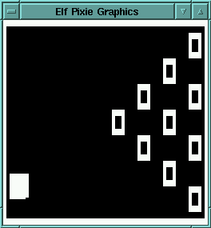

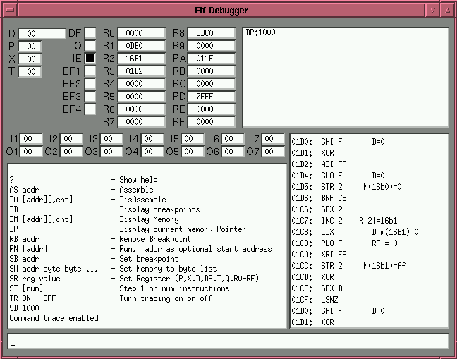
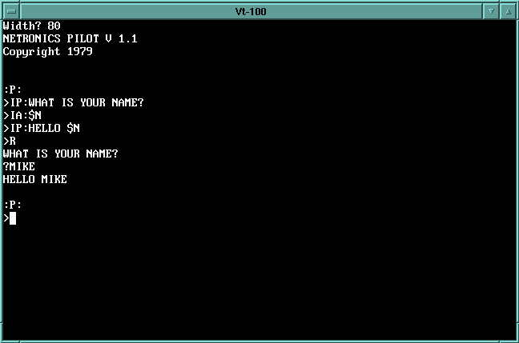
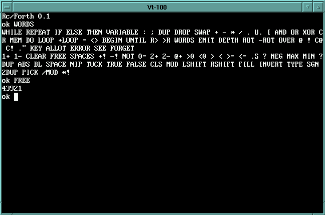
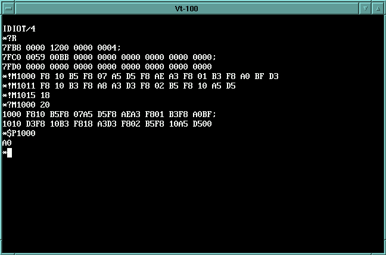
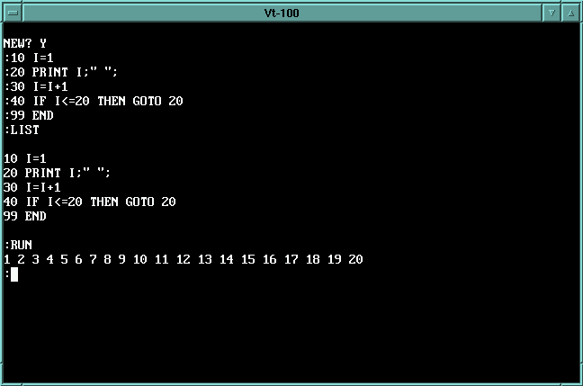
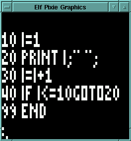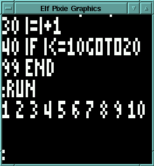
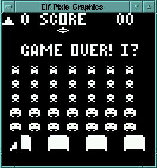
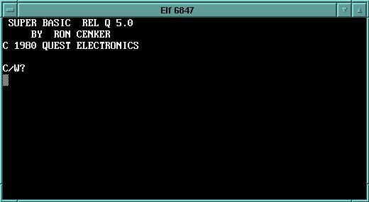
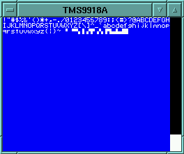
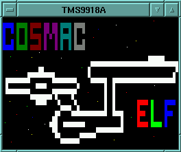
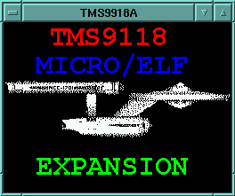
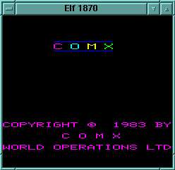
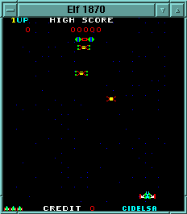